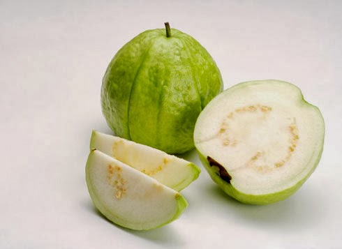

Dù giờ đây, để nếm được ổi Bo gốc cũng không đơn giản nhưng loại trái cây này vẫn nức tiếng gần xa. Ổi Bo nhỏ thôi, chừng cỡ nắm tay nhưng rốn bé tí lại ngon như bao nhiêu tinh túy của đất đều chắt lọc, giữ riêng cho mình. Có điều đặc biệt là ổi Bo trồng ở Thái Bình mới thơm, giòn và ẩn chứa các tầng vị khác nhau: chát, chua dịu rồi mới đến ngọt mát như vậy. Cùng giống mà đem trồng nơi địa phương khác cũng không thể có đúng vị ổi Bo. Tiếc rằng ổi Bo năng suất và hiệu quả kinh tế không cao nên diện tích trồng đã bị thu hẹp đi nhiều, khách muốn tận hưởng vị riêng cũng khó tìm dù đứng ngay trên quê gốc của giống cây đặc sản.